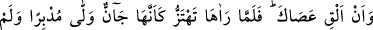
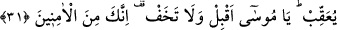
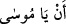
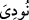
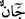
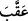

Ve yine şöyle der:
Semender değilsin, o halde ateşin etrafında dolaşma
Kişiye önce yiğitlik lâzım, sonra savaş.
Bu, hâli Mûsâ’nınki gibi olmayanlara işâret eder; Allah Teâlâ’dan aşk ateşine düşüp
fenâ-yı küllî sırrına vâsıl olmayı isteriz.
31. Ve “Asânı at!” (denildi). Mûsâ (attığı) asâyı yılan gibi deprenir görünce,
dönüp arkasına bakmadan kaçtı. “Ey Mûsâ! Beri gel, korkma. Çünkü sen
emniyette olanlardansın” (buyuruldu).
“Ve “Asânı at!” (denildi)” cümlesi, yukarıdaki “__WORD__ cümlesine atfedilmiştir.
Her ikisi de “__WORD__ (nidâ olundu)” cümlesinin tefsiridir. Yani; Mûsâ (a.s.)’a; “elinden
asânı at, bırak diye nîdâ olundu.” O da atınca asâ, yılan hâline döndü, sağa sola hareket
etmeğe başladı.
“Mûsâ (attığı) asâyı yılan gibi deprenir” güçlü bir şekilde hareket eder “görünce,”
Sanki Mûsâ (a.s.)’ın asâsı, hareket ve süratte bir yılan gibi yahut şekil ve sûrette bir
yılan gibiydi. Çünkü asâsı, ancak Firavun’un önünde bir yılana dönmüştü. “__WORD__,
evlerde çok bulunan gözü sürmeli ve zararsız bir yılan çeşidinin adıdır.
Mûsâ (a.s.) korkudan “dönüp arkasına bakmadan kaçtı.”
Halil der ki: “__WORD__, ayağın ökçesi üzerinde dönmek demektir.
Bunun üzerine“Ey Mûsâ! Beri gel,” yâni huzura gel, “korkma” bu yılandan. Çünkü
sen emniyette olanlardansın.” Zira benim katımda peygamberler korkmaz (buyuruldu).
(Allah katında peygamberlerin korkmayacağı ile ilgili âyet Neml sûresinde geçmişti.)
Eğer, asâyı atmasının faydası nedir? dersen, ben de şöyle derim: Mûsâ’nın ona
alışması ve onun Firavun’un yanında yılana dönüşmesinden ve diğer mucizelerden
korkmaması içindir. Nitekim el-Es’iletü’l-müfhıme’de bu şekilde kaydedilmiştir.
Âyet, Allah’ın dışındaki dayanakları atmaya da işâret eder. Zira kim Allah’a
güvenirse emniyette olur, O’ndan başkasına güvenen ise korkuya dûçâr olur.
Keşfü’l-esrâr’da der ki: Allah Teâlâ bir başka yerde şöyle buyurdu: “Al onu!
Korkma!” (Tâhâ, 20/21). Ey Mûsâ! Asâyı tut, ancak asânın sevgisini gönlünde tutma ve
onu sığınılacak şey olarak görme. Dünyaya sâhip olan zenginlere işâret olmak üzere,
“Dünyaya (dünyalığa) sâhip ol, ancak dünya sevgisini gönlünde tutma ve onu kendine
sığınılacak yer yapma.” buyurmaktadır. “Dünya sevgisi her hatânın başıdır.”[102]